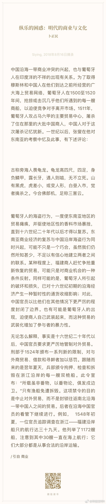

现在的足球和篮球，绝大多数球员只有去大球队才能获得知名度——即使我不是皇马的球迷，也连它的替补都认识好几个，但顶级联赛不少中下游球队我连当家球星也不认识；篮球也是一样，勇士骑士的替补都知道的人很多，但不少NBA球队让人一个球员也不认识。但也有例外，顶级球星就是自带光环，走到哪就把关注度带到哪，这在足球界就是梅西和C罗，在篮球界就是詹姆斯和库里（虽然库里球技和詹姆斯差距比较大吧，但受欢迎程度却是一个等级的）。C罗和詹姆斯今年夏天都跳到新的球队并带走一大批关注度；梅西和库里应该都会在一支球队终老，所以我们就只能想象他们的市场号召力了。

斯图亚特9
2018-08-16
斯图亚特9
2018-08-16
按作者的说法，明朝中期开始对海上贸易实行更保守的政策是在葡萄牙人武装夺取了印度人的印度航线之后。后来沿海地区的倭寇也是这一变化的副产品。
- 